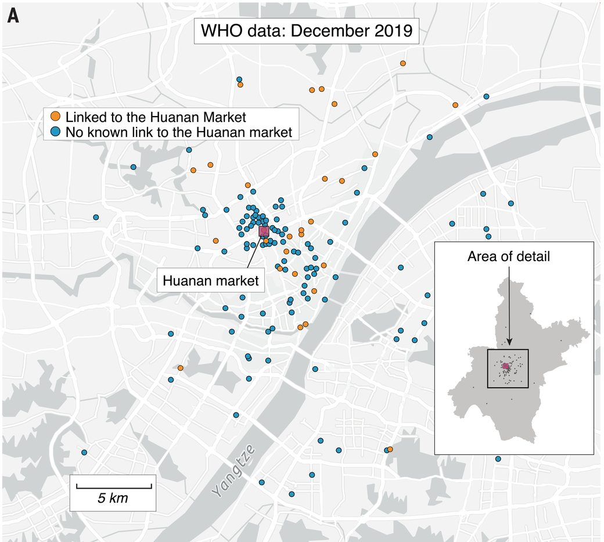

The two cases · contested science
Applied to contested science.
Watch the same six node types meet two questions still open on purpose: where COVID-19 began, and whether eggs are healthy. Rather than adjudicating, we are showing what becomes possible once a finding is a graph of records anchored on its actual data.
1 COVID-19 origins · navigate to the evidence
Five readings. One picture. See for yourself.
The Rootclaim COVID-origins debate turned on one term — where the earliest known cases clustered — and five independent-looking analyses weigh in. They are five readings of one shared picture, not five measurements of the world; because each is indexed to that same artifact by its observationBase, the schema lets the readings coexist over one base — and lets you walk down to it and judge for yourself. Do that, and the second surprise lands: the picture stands in for a dataset that was never released.
The convergence — five readings, one shared base
Walk down to that shared base, and here is what you find. Judge Eric Stansifer, building his own case inventory for the debate, wrote down the problem himself:
To the best of my knowledge, there does not exist any publicly available list of the earliest known covid cases. The best source, and nearly the only source, on early covid cases is the 2021 WHO report and its annex… This aggregate data is derived from extensive searching conducted by the WHO team… which cannot be independently verified or duplicated.— Judge Eric Stansifer, Rootclaim debate decision
The 164 December-2019 Wuhan cases were never published as a data table. They exist publicly only as dots on a map in the WHO annex. To get coordinates at all, Worobey et al. had to digitize the picture — recovering 155 of the 164 points, and stating plainly that No line list of early COVID-19 cases is available
, with the extraction introducing up to about 50 m of noise. Every later analysis — a spatial-statistics rebuttal, both judges, the losing side — reads from that same digitized picture.
The derivation, made visible

So the anchor of the entire debate is one non-reproducible picture. The five analyses were never five independent measurements of the world; they are five models over one thin input. A spread that large across shared inputs is a signal about the analyses, not about the world — and you can only see it once the evidence is indexed by the artifact it stands on, not by the paper that cites it.
It accumulates — the graph accepts work that didn’t exist when it was built
The Rootclaim debate closed in 2024. In March 2026, Cell published a new class of evidence — selection dynamics on the branch preceding emergence, with the 1977 H1N1 outbreak (an accepted lab/vaccine-origin event) as a validated positive control. In a sealed-document world that paper is a new PDF nobody wires up. In the graph it is a Claim and two Evidence nodes that snap onto the existing structure.
New records snap onto the existing graph
The COVID Request writes itself
Both judges recorded what would have changed their minds — and had nowhere to put it. Judge Will Van Treuren, on the debate format:
I was not able to evaluate several lines of inquiry which I thought could have been valuable for both sides.— Judge Will Van Treuren, Rootclaim debate decision
He even named his own unexamined crux: A cursory search suggested some (more credible) reports of early seropositivity in retrospective studies of US blood banks that would have been hard to explain under the ZO theory.
That sentence has sat inert in a PDF ever since. As a record it becomes a Request: request_target → the contested market-centrality Claim; request_for → an adversarial, pre-registered re-analysis of the same 155 coordinates. It needs no new data and no one’s cooperation — it hangs off the exact claim above.
This isn’t only a proposal. In one lab’s own issue tracker — Roam, with the Discourse Graphs plugin — the mechanism already runs. Over 40 months: 445 issues; 29% claimed; 15% claimed by someone other than the creator; 38% of claimed issues produced a result; median 12 days from claim to first result. One issue sat dormant for fourteen months until a new undergraduate found it, claimed it, and completed it before the PI knew it existed. The vocabulary maps without translation: Issue = Request, Experiment = Study, Result = Evidence.
The full circle — a Request, claimed, becomes a Study
Scope, honestly: that is one lab, in Roam, on the DG plugin. The handoff mechanism is validated; MIRA itself is not “deployed at scale.” The field data is drawn from Matt Akamatsu’s published lab updates.
2 Are eggs healthy? · when the artifact doesn’t exist
A question with no observationBase.
“Are eggs healthy?” is a Question with nothing measurable under it as posed. Our protocol makes it clear that you need something observable to generate evidence. The need for a data artifact splits it into answerable sub-questions: healthy compared to what, measured on which observable — apoB? lifespan? “biological age”? — in whom.
A question with a missing observationBase
The Requests fall out of the gap
Each missing artifact names a study that would supply it: a replicated crossover study measuring apoB (not just LDL-C), a longitudinal study controlling for egg consumption and measuring biological age. Each is a Request pointing request_target at the claim it would settle and request_for at the study that would settle it.
The eggs case is the mirror image of COVID: there, the artifact exists but is a picture of a dataset never released; here, under the headline question, the artifact never existed. Both are only visible once you name what each claim is standing on.